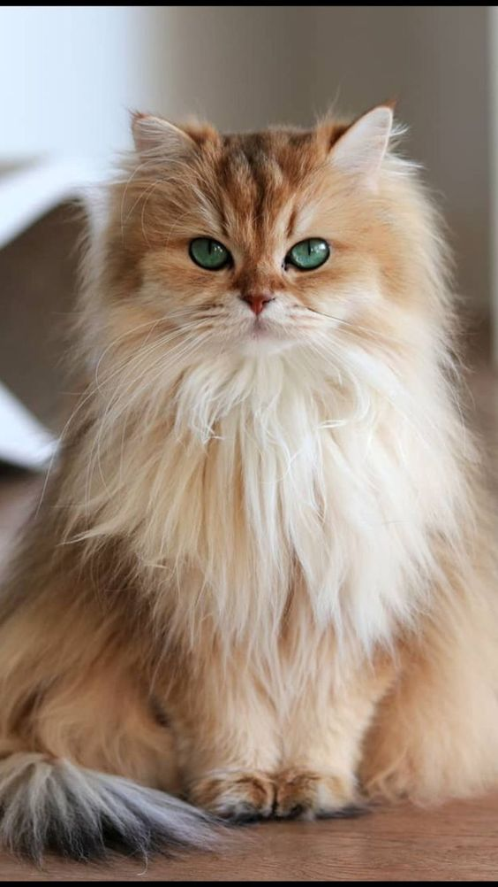
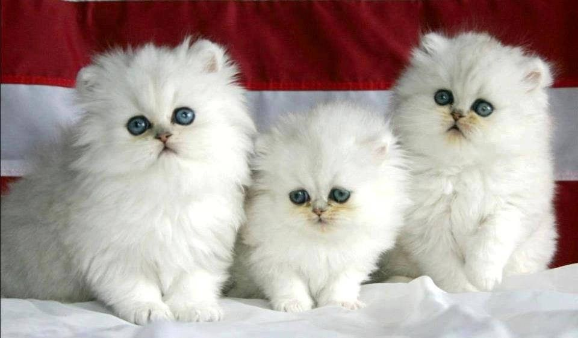
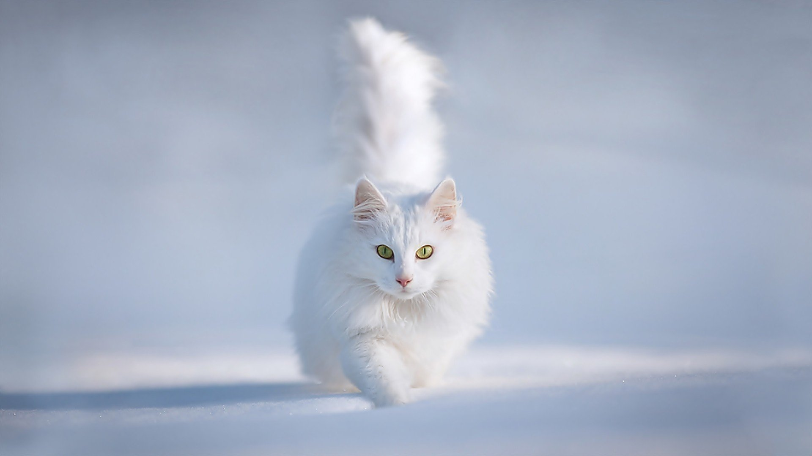

Cara Dolan / Stocksy United
Also lovingly referred to as one of the "smushed-face" cats, the Iranian cat or Shiraz cat (named for a city in Iran), Persians have beautiful, long fur coats. They can come in almost any color and have a flat face when compared to most other breeds of cats. Persians are featured in many movies, artworks, and commercials and have been one of the most popular breeds of cats for decades. Their coats demand regular grooming, otherwise, matting will result. Like many purebreds, they are prone to a variety of diseases, including renal and cardiac problems.
Breed Overview
HEIGHT: 14 to 18 inches
WEIGHT 7 to 12 pounds
COAT AND COLOR: Long coat in solid (white, black, cream), tabby, calico, bi-color, silver and gold, shaded, and smoke
LIFE EXPECTANCY: 15 to 20 years
more image:



 